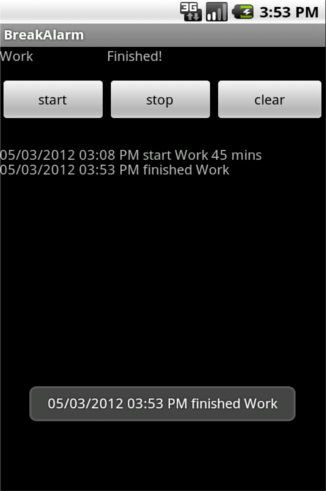

Minimal countdown timer
o control work flow. I realize that I work more productive if I make breaks each 45 minutes. Here is my implementation of promodo like timer. If you need to have brakes in other periods, please use program settings and modify timer period. Now application is very simple it just plays a sound and logs time when timer starts/stops/finishes. Main processing runs as a service, so activity can be closed. In log you can see how much time you have been working, when the work started and finished.